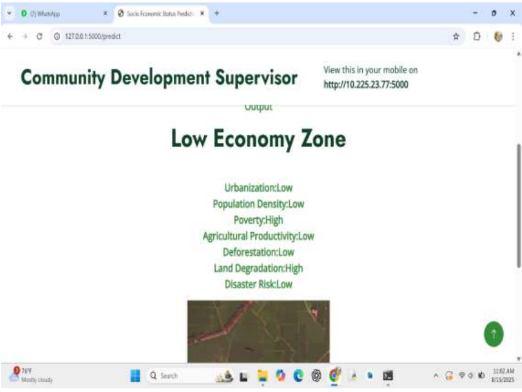

An intelligent Machine Learning project that uses satellite imagery and Convolutional Neural Networks (CNN) to analyze geospatial data and estimate socio-economic ranges of geographical regions.
Socio-economic conditions play an important role in understanding the development of a particular region. Traditional methods of collecting socio-economic data can require significant time, effort and resources.
This project uses satellite images and Machine Learning techniques to identify visual patterns in geographical areas. A Convolutional Neural Network (CNN), developed using TensorFlow, is used to analyze satellite imagery and predict the socio-economic range of a selected region.
The application uses Flask as its backend framework, Pandas and NumPy for data processing, and MySQL for database management.
Analyze satellite images to identify geographical patterns and features related to regional development.
Apply CNN-based image analysis to estimate the socio-economic range of geographical locations.
Process and prepare geospatial image data using Pandas and NumPy for model analysis.
Provide an interface where users can submit satellite images and view the model's prediction results.
The user provides a satellite image of the geographical region that needs to be analyzed.
The image is prepared for analysis through preprocessing operations such as resizing, normalization and data preparation.
The trained Convolutional Neural Network analyzes the image and extracts important visual features.
Based on the patterns learned during training, the model predicts the socio-economic category or range associated with the region.
Flask handles the application workflow, displays the prediction to the user, and MySQL stores relevant application records.
CNN is a Deep Learning algorithm commonly used for image recognition and image classification tasks. It automatically learns important visual features from images.
In this project, the CNN model is used to analyze satellite images and learn patterns that help estimate the socio-economic range of geographical regions.

The project demonstrates how Machine Learning and geospatial satellite imagery can be combined to study socio-economic patterns across geographical regions.
By integrating CNN, TensorFlow, Flask, Pandas, NumPy and MySQL, the system provides an approach for analyzing satellite images and estimating socio-economic ranges.
This college main project helped develop practical knowledge of Deep Learning, image processing, backend development and database integration.